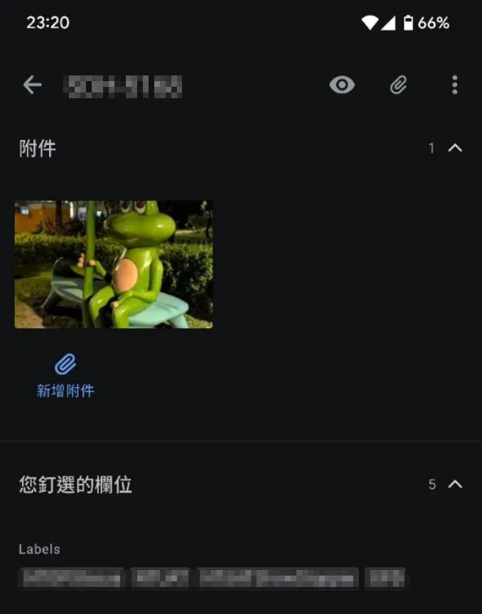
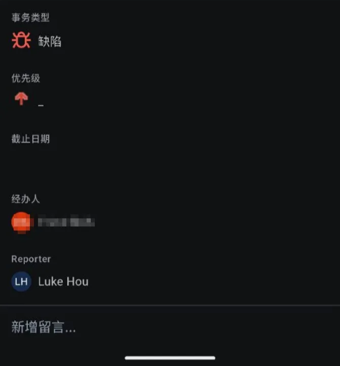

n8n Line Bot 快速生成 Jira Ticket
用Line回報問題並附圖，直接建立Jira ticket 到對應的專案，大幅簡化回報流程
項目概述
在客戶端進行使用者實地測試時，最大的挑戰之一就是如何快速且完整地回報問題。過去，團隊成員需要手動記錄，測試結束後再花費大量時間將問題登錄到 Jira，這個過程不僅耗時，也容易遺漏細節。
為了解決這個痛點，我利用 n8n 設計了一套自動化流程，讓一線人員可以直接透過 Line 快速回報問題，n8n 會自動在 Jira 中建立對應的 Ticket，並附上圖片、指定負責人與標籤，並自動寫到 Excel 整理表中。
這套工作流在近期的客戶端測試中發揮了極大的效益，讓每一輪的問題回報的效率從數十分鐘縮短到幾分鐘內。
核心做法與亮點
- 即時回報: 測試人員在現場用 Line 就能立即拍照、打字回報問題，無需攜帶筆電或手寫筆記。
- 智慧分派: n8n 工作流會根據訊息中的關鍵字（如 Project Key），自動將 Ticket 建立到正確的 Jira 專案。
- 欄位自動化: 自動填寫 Reporter、Assignee、Labels 等欄位，大幅減少手動建立 Ticket 的時間。
- 降低溝通成本: 實習生或非開發團隊成員無需 Jira 帳號也能回報問題，節省授權費用的同時，也保護了專案資產的安全性。
成果展示
以下為此工作流的實際運行截圖：
n8n 整體工作流

Line 回報示範

自動建立的 Jira Ticket (1)

自動建立的 Jira Ticket (2)
自動建立的 Jira Ticket (3)
手機 Triage 示意圖

價值與影響
-
節省大量時間 將回報與建立 Ticket 的時間從數十分鐘縮短至幾分鐘，讓團隊專注於測試本身以及跟使用者的互動。
-
提升問題回報率 簡化流程，提升回報效率，讓問題能夠被即時且完整地記錄，不再遺漏。
-
自動寫到 Excel 總表 自動將每一筆回報的內容跟對應的 Jira 網址登記到 Excel 總表，省去手工作業的時間。
-
兼顧成本與安全 無需為所有回報者購買昂貴的 Jira 授權，同時確保專案權限不外流。